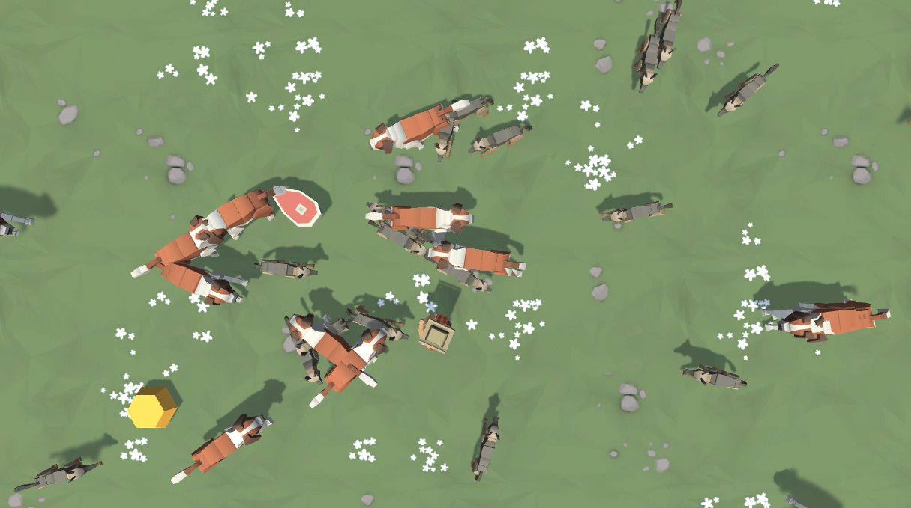

Unity provides a vast selection of free high-quality courses on their Unity Learn site. This project was completed in tandem with one of those courses named Create with Code. The course intended to prepare a student with no experience with Unity or C# to become comfortable using the software to create real-time applications and prepare them to take the Unity Certified Programmer certification.
As part of the course, students were encouraged to create their own personal project using the techniques taught. For my project, I decided to create a simple top-down shooter where the player had to survive a swam of dogs and gain points by shooting steaks at them. It also included 3 levels of difficulty
To begin, I filled in a basic project design document which dictated exactly what I visioned for the project. This document included information such as what the player plays as, how the player moves their character, why the player would need to move their characters, as well as details on music, particle systems, score systems and so on. It would be the document that keeps the project on track. Very useful for one such as myself who likes to experiment.
With the document done, I began with creating a prototype game using primitive shapes generated by Unity. Each primitive shape would represent a game object in the game and be placeholders until it can be replaced by higher quality assets. The first iteration of the game was dedicated to creating motion. Using the Unity physics engine, I created simple character movement on the X-Z plane. Invisible colliders were added to prevent the player from leaving the play area. For the enemy (dogs), I was only concerned with it moving in a straight line in the direction it was facing, and also be bound in an area slightly larger than the play area to have it seamlessly appear in the camera.
The second iteration was to add proper gameplay. With the movement done, I wanted the user to be able to shoot enemies, so I added another function to allow the user to spawn a projectile that moves forward. When this projectile collides with the enemy, it will reduce the health of that enemy. If the health of the enemy is 0 or less, the enemy game object is destroyed. Now, we have a game, albeit not a very good one.
Third iteration was focused on replacing placeholders with proper assets and changing aesthetics. As all the scripts existed on the placeholders, it was simple to just deactivate the rendering of the placeholders and have the proper assets as a child of that placeholder. Now, the new game objects will function exactly as before with the updated visuals! It was at this point that I also added the title, changed the setting, and added a singleton to play consistent music throughout the game.
The fourth and final iteration was dedicated to adding a scoring system, difficulty levels, and final polishing with VFX and gameplay audio. The scoring system consisted of adding points gained from destroying different enemies as well as gaining points for surviving. The final score would be the accumulation of all those points. Difficulty was adjusted in the main screen that gave the player a selection of difficulties to choose from. This would pass information to the game manager to adjust the settings of the game. Finally, particle effects were adjusted, and gameplay audio added to make the overall game feel much more full and complete.
I’m very happy to have completed this project, I think overall it went very well as I stuck with the project document consistently and there were not many major bumps on the way. There was a lot of advanced techniques that I managed to learn such as the use of object-pooling to optimise spawning and removing game objects instead of instantiating and destroying them. I think that for my next original project, I would like to explore different ways of using the Unity engine such as creating a mobile game or a puzzle game.